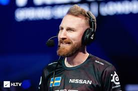
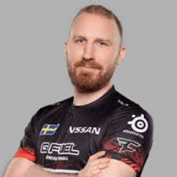
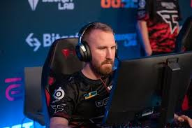

Свой путь Олоф Кайбер начинал с
классической Counter-Strike в 2009 году.
В команде Aquintra, принявшей участие на
квалификациях к турнирам «YaShasPoo» и
WCG 2009, он познакомился c Ричардом
«Xizt» Ландстрёмом и Маркусом «pronax»
Уолстеном . К сожалению, в CS 1.6 Кайберу не удалось добиться каких-либо значительных результатов.
2012—2013
В Counter-Strike: Global Offensive
Кайбер начинал свой путь в командах Absolute
Legends[2] и H2k[3], однако ни в одной из них
он не добился успеха. Так продолжалось вплоть до
того, как его пригласили в шведскую команду LGB
eSports[4], в которой он по-настоящему смог раскрыть
весь свой потенциал. Лучшим достижением Кайбера в
LGB считается выход из группы на мажор-турнире Dreamhack Winter 2013.
2014
В июне Кайбер присоединился к Fnatic[5][6].
Практически сразу после вступления команде
удалось занять второе место на ESL One Cologne
2014[7]. Нескольку месяцев спустя Fnatic
переросли из тёмной лошадки в настоящего ф
аворита, который был одним из главных
кандидатов на взятие турнира DreamHack
Winter 2014[8]. После того, как Fnatic в
ышли со второго места в своей группе, в че
твертьфинале им предстоял матч против фра
цузской команды Team LDLC. Этот матч запом
нился тысячам команд не из-за красивой игры, а из-за того
, что olofmeister попал в скандал, связанный с его нечестной
подсадкой[9]. Fnatic отказались переигрывать матч, вследствие ч
его были исключены из турнира[10]. После того, как это случилос
ь, Кайбер думал уйти из Fnatic и забросить игру[11], однако ост
ался в команде после победы на ESEA Invite Season 17 Global Finals[12].
2015
В феврале Fnatic выиграли турнир IOS Pantamer
a, одолев в финале французскую команду Titan[13].
В марте Fnatic удалось занять первое место на ESL
One Katowice 2015 — первом мажор-турнире в этом
году. В августе Fnatic стали чемпионами ESL One
Cologne 2015, таким образом став первой командой
в истории, которой удалось выиграть два мажор-
турнира подряд[14]. На DreamHack Open Cluj-Napoca
2015 — 3 мажор-турнире в этом году — Fnatic
закончили своё выступление в четвертьфинале турнира[15].
После того, как Маркус «pronax» Уоллстен покинул
Fnatic 12 ноября 2015 года, руководство организации нашло ему замену в лице
бывшего тиммейта Кайбера — Денниса «dennis» Эдмена[16][17]. После замены Fnati
c удалось выиграть 3 последующих турнира: FACEIT DreamHack Winter 2015[18], Fra
gbite Masters Season 5[19], и ESL ESEA Pro League Season II — Finals[20].
Olofmeister стал лучшим игроком 2015 года по версии портала hltv.org[21][22].
2016
В январе olofmeister и его команда выиграл StarLadder XIV,
одолев в финале украинскую команду Natus Vincere со счётом
2-0 по картам[23]. 5 марта Fnatic выиграли IEM Katowice World
Championship 2016, в финале победив бразильцев из Luminosity
Gaming со счетом 3:0[24]. В апреле Fnatic заняли 5—8 место на первом
мажор-турнире в этом году MLG Major Championship: Columbus[25]. 8 апреля
стало известно, что olofmeister возьмёт перерыв от соревновательного
Counter-Strike из-за травмы руки, а временно его место займёт Никлас
«Plessen» Плессен. Вскоре вместо него был поставлен Джон «wenton» Эрикссон[26][27].
2017
В начале 2017 прошёл Major-турнир
Eleague Major Atlanta, где швед
принял участие в составе Fnatic.
Команда вышла из группы со счетом 3:1.
В четвертьфинале шведы встретились с Gambit, которых они обыграли со счётом 2-:.
В полуфинале команда Олофа дала сбой и проиграла со счётом 2:0 будущим чемпионам —
Astralis. После Major’а, во Fnatic происходят замены: disco, doplan, twist были заменены
на ветеранов клуба: JW, flusha. С возвращением старого состава команда не показывала результат.
Лишь на DreamHack Open Summer Fnatic дошла до финала, где от титула их остановила лучшая команда в мире
— SK Gaming. 21 августа Кайбер подписал контракт с FaZe Clan, что означало переезд в США и начало игр с интернациональной командой.
За оставшийся промежуток года, FaZe выиграла 3 чемпионата, дважды заняла 2 место, одиножды 3 место и дважды не вышла из группы.
По итогам года, Olofmeister удостоился 19 позиции в списке 20 лучших игроков по версии портала hltv.org[источник не указан 151 день].
2018
В январе 2018 FaZe играли на квалификациях к Eleague Major Boston. После сенсационного разгрома от
Vega Squadron, швед с командой проходит квалификации со счётом 3:1. На основной стадии FaZe были главным
претендентом на чемпионство. Пройдя Fnatic, Vega Squadron, SK Gaming, FaZe выходят из группы без единого поражения.
В четвертьфинале европейский микс встретился с mousesports, с которыми FaZe разобрались без особого сопротивления
. В полуфинале их ждали Natus Vincere во главе с Zeus’ом. По итогу двух карт FaZe прошли в финал. В финале же они
встретились с главной сенсацией турнира — Cloud9. На американских трибунах было большое количество американски
х болельщиков, которые болели за «облачных». Первая карта ушла в пользу европейского микса со счётом 16:14. Но
на последующих происходила настоящая битва, по итогам которой Cloud9 сенсационно стали чемпионами. Матч между
FaZe и Cloud9 считают одним из лучших и масштабных в истории CS:GO. Для Олофа это был 2-й проигранный финал Major-турнира.
После поражения, FaZe занимают 3—4 место на V4 Future Soorts Festival, 4-е на StarSeries i-League S4 и 2 место на
IEM Katowice 2018.
1 апреля Олоф объявляет о временном уходе из команды. По слухам, отец шведа оказался болен и Олоф переключил все
силы на отца. На место Кайбера был взят Ричард «xizt» Ландстрём. Команда смогла успешно проявить себя с заменой —
выиграли IEM Sydney 2018.
Позже, Олоф заявил о своём возвращении. Но, к сожалению, ему пришлось пропустить ECS Season 5 Finals, ESL One Cologne,
ESL One Belo Horizonte. На замену шведа был взят норвежец cromen, который идеально показал
себя на высоком уровне. Вместе с норвежцем, FaZe заняли первое место ESL One Belo Horizonte. Уже 11 июля Кайбер заявил о своём возвращении.
Первым турниром для него стал Eleague Premier 2018,
где команда вылетела на последнем месте.
Далее последовал DreamHack Masters в Стокгольме, где команда проиграла на стадии четвертьфинала.
Наступил Faceit Major. В Лондоне FaZe с трудом вышли из группы со счётом 3:2. В четвертьфинале
Олоф и компания проиграла лучшей команде мира — Astralis.
Уже после Major’а на ESL One New York, FaZe в очередной раз не показали высокого результата и вылетели на последнем месте.
Для команды это становится тревожным звонком. Появляются слухи о возможном уходе капитана —
karrigan’a. EPICENTER 2018 оттянул этот момент. FaZe смогли вырвать победу в финале против Natus Vincere.
Турнир в Москве стал последним победным турниром с karrigan’ом в составе.
В Копенгагене на BLAST Pro Series команда заняла лишь 4 место.
На IEM Chicago FaZe добрались до полуфинала. В полуфинале развязалась серьёзная борьба с Liquid
, которые и выиграли встречу.
Конец года завершился участием на BLAST Pro Series в Лиссабоне. Команда вылетела на 5 месте.
По итогам 2018 года, Олоф впервые за свою карьеру не попал в рейтинг 20-и лучших игроков мира[